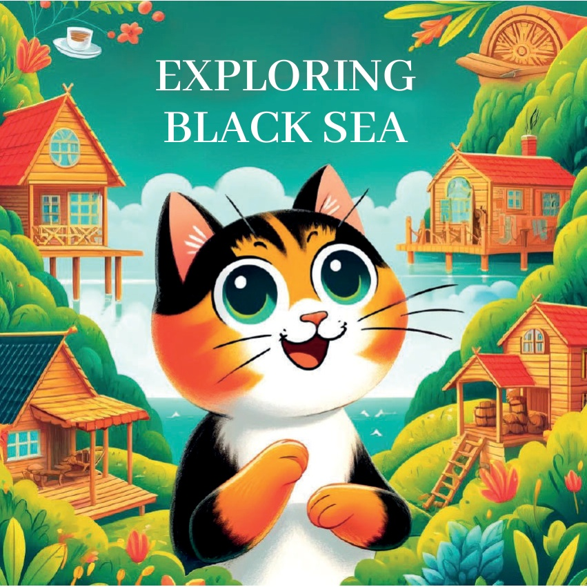
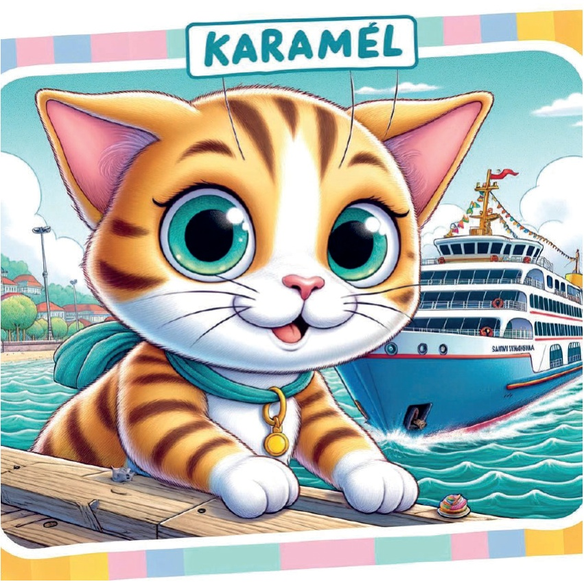
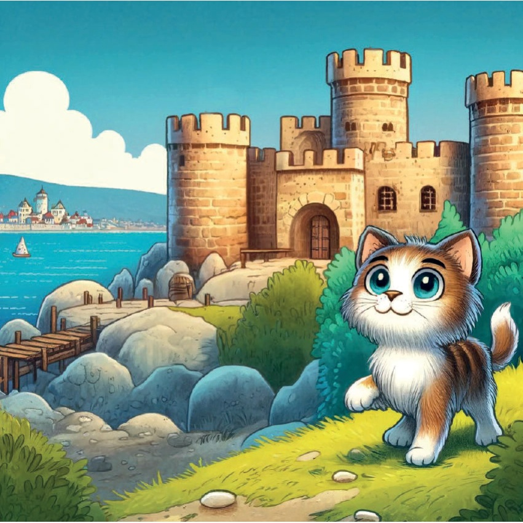
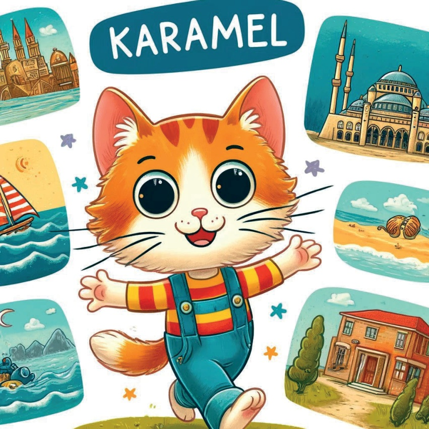
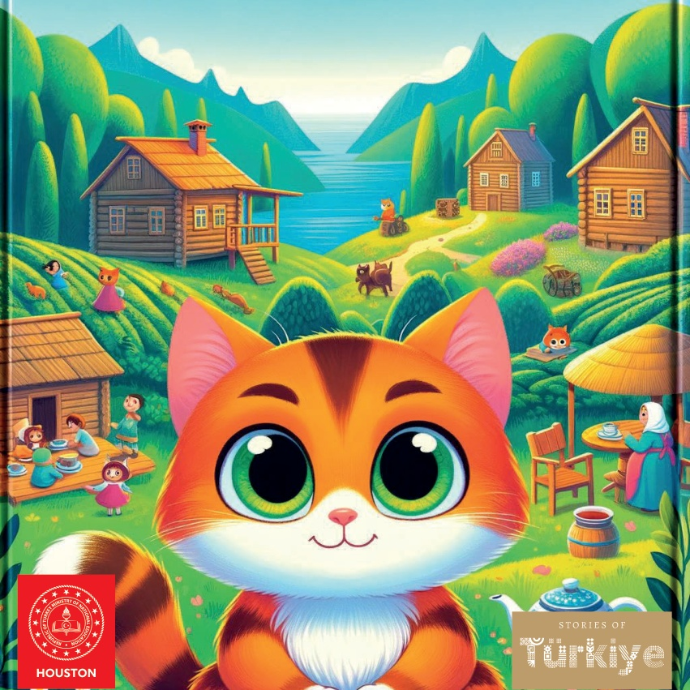

1

2

3
Det var en gång en nyfiken liten katt
som hette Karamel och älskade att utforska
olika regioner.
En dag bestämde hon sig för att resa över
svarthavsregionen i Türkiye för att lära sig
om dess unika kultur, historia
och naturliga skönhet.
4
5
Rize: Teplantager
Karamels första stopp var Rize,
där hon besökte de frodiga teplantagerna.
Synen av oändligt gröna kullar täckta med
teplantor var uppfriskande och vacker.
6
7
Trabzon: Sumela-klostret
Sedan reste Karamel till Trabzon
för att se det antika Sumela-klostret.
Klostret, byggt in i klipporna,
var ett underverk av arkitektur och historia.
8
9
Artvin: Karagöl
I Artvin upptäckte Karamel den
lugna sjön Karagöl.
Det klara, reflekterande vattnet
och de omgivande skogarna
gjorde det till en perfekt plats
för avkoppling.
10
11
Samsun: Bandırmafärjan
Karamel besökte sedan Samsun,
där hon utforskade den historiska
Bandırmafärjan.
Färjan spelade en betydande roll
i Turkiets historia, och Karamel älskade
att lära sig om dess betydelse.
12

13
Ordu: Boztepe
I Ordu njöt Karamel av
den fantastiska utsikten från Boztepe-kullen.
Den panoramiska vyn över staden
och Svartahavet var hisnande vacker.
14
15
Sinop: Sinop slott
Karamel reste till Sinop,
där hon utforskade det antika
Sinop slott.
Slottets höga murar
och utsikten över Svarta havet från
toppen var oförglömliga.
16

17
Amasya: Yalıboyu Hus
I Amasya beundrade Karamel
de vackra Yalıboyu husen
längs flodbanken.
De färgglada husen speglades
i vattnet och skapade en pittoresk scen.
18
19
Med ett hjärta fyllt av nya erfarenheter och minnen insåg Karamel hur unik och vacker Svarta havskusten är. Hon återvände hem, drömmande om sitt nästa äventyr.
20

21

22